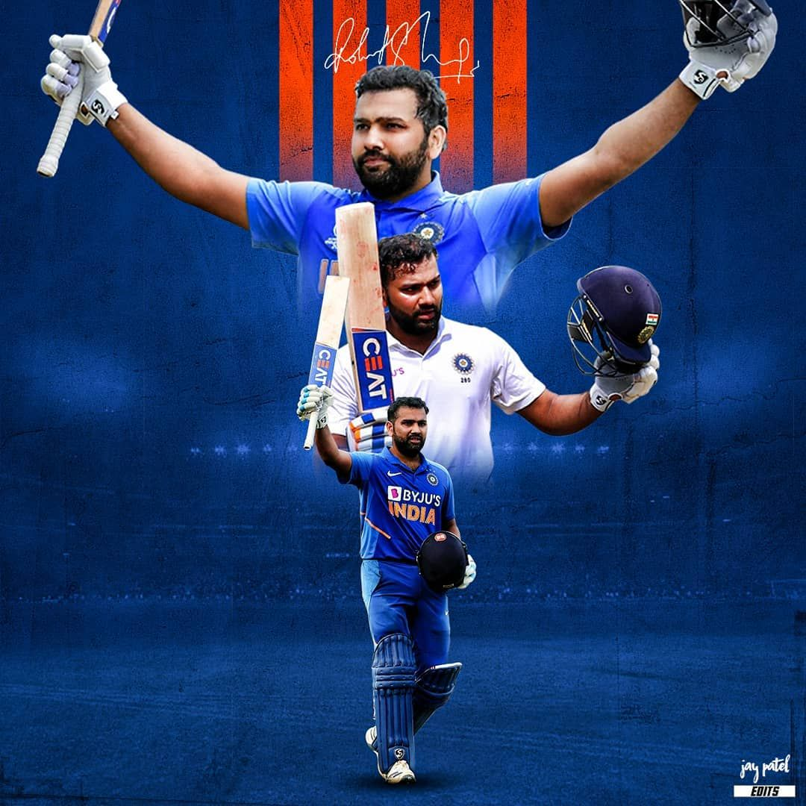

About Rohit Sharma

Rohit Gurunath Sharma is an Indian cricketer, born April 30, 1987, in Nagpur, Maharashtra, known for his effortless timing and record-breaking innings as an opening batter. He made his ODI and T20I debut in 2007 and his Test debut in 2013, going on to become one of the most successful captains in Indian cricket history before recently stepping back from leadership duties.
Career Snapshot
| Category | Details |
|---|---|
| Born | April 30, 1987, Nagpur |
| International Debut | 2007 (ODI & T20I), 2013 (Test) |
| Formats Played | ODI (retired from Test and T20I cricket) |
| IPL Team | Mumbai Indians (since 2011) |
| Batting Style | Right-handed batter, opener |
| Nickname | "Hitman" |
Captaincy Journey
Rohit built one of the most successful captaincy records in Indian cricket, leading India to the 2024 T20 World Cup title and the 2025 Champions Trophy, while also captaining Mumbai Indians to five IPL titles — jointly the most by any IPL captain. He retired from Test cricket in May 2025 and has since gradually stepped back from captaincy duties across formats as India's team management transitions leadership to a younger generation of players.
Playing Style
Known for his effortless timing rather than brute force, Rohit is regarded as one of the finest ODI and T20 openers of his generation. He holds the record for the highest individual score in ODI cricket and is the only batter to score three ODI double centuries, a rare blend of elegance and record-breaking consistency.
IPL & Current Form (2026)
Rohit continues to play for Mumbai Indians in the IPL, with captaincy duties now handed over to a new leader as the franchise builds around its next generation. Even past 39, he remains a valuable senior presence in the Mumbai Indians line-up alongside players like Jasprit Bumrah and Suryakumar Yadav, contributing his experience at the top of the order.
Legacy
Rohit Sharma's legacy is built on a rare combination of record-breaking numbers and leadership — as the most successful captain in IPL history and a multi-format ICC title winner for India, he is widely regarded as one of the finest batter-captains Indian cricket has produced. In January 2026, he was also honoured with the Padma Shri, one of India's highest civilian awards.